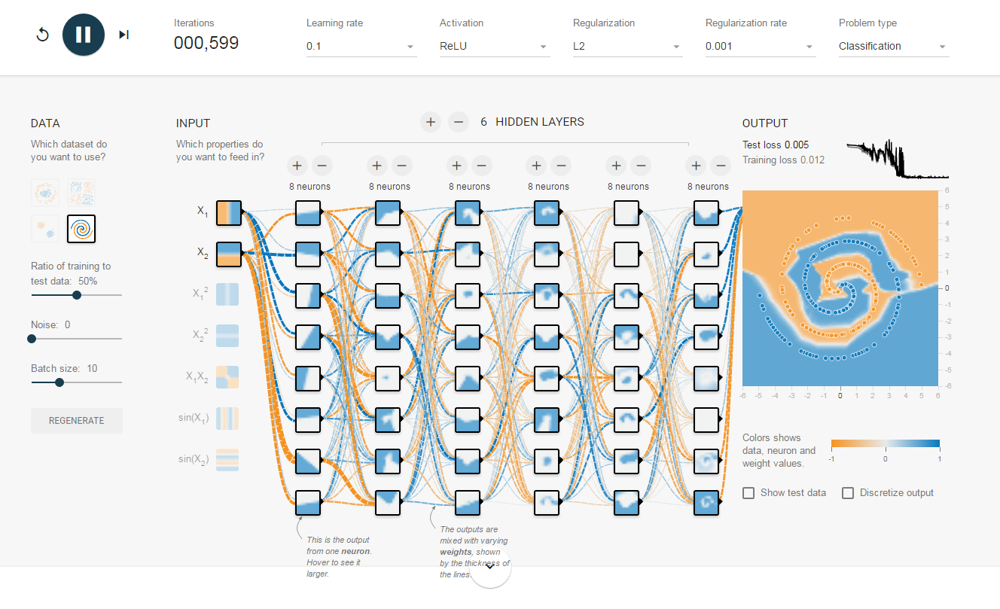

<p >
	Scalars are single numbers and are an example of a 0th-order tensor. Vectors are ordered arrays of single numbers and are an example of 1st-order tensor. Matrices are rectangular arrays consisting of numbers and are an example of 2nd-order tensors. Tensors The more general entity of a tensor encapsulates the scalar, vector and the matrix. It is sometimes necessary both in the physical sciences and machine learning to make use of tensors with order that exceeds two. In theoretical physics, and general relativity in particular, the Riemann curvature tensor is a 4th-order tensor that describes the local curvature of spacetime. In machine learning, and deep learning in particular, a 3rd-order tensor can be used to describe the intensity values of multiple channels (red, green and blue) from a two-dimensional image.
</p> 


